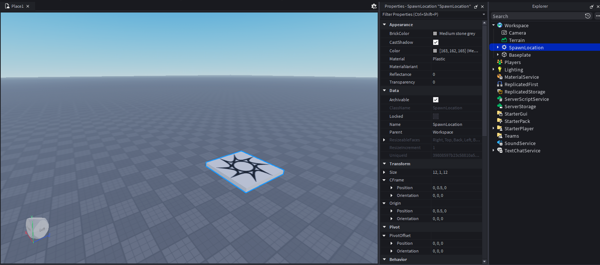

🎯 Цели занятия
- Изучить главные окна Roblox Studio: Workspace, Explorer, Properties, Toolbox
- Освоить инструменты Select, Move, Scale, Rotate
- Создать первую сцену из нескольких объектов Part
- Научиться группировать и сохранять свою модель
| Этап занятия | Время | Что делаем |
|---|---|---|
| Повторение камеры | 5 мин | Вспоминаем управление из занятия 1.2 |
| Главные окна Studio | 15 мин | Workspace, Explorer, Properties, Toolbox |
| Инструменты Select/Move/Scale/Rotate | 15 мин | Разбираем и пробуем каждый |
| Практика: строим комнату | 40 мин | Part, стены, мебель из Toolbox |
| Сохранение модели | 10 мин | Группировка и Save to Roblox |
| Опрос и итоги | 5 мин | Проверяем себя |
| Итого | 90 мин | — |
1 Главные окна-помощники Roblox Studio
Студия состоит из нескольких панелей. Если какого-то окна нет на экране — его всегда можно включить во вкладке «Вид» (View) на верхней панели.
| Панель | Что это такое | Аналогия |
|---|---|---|
| Workspace (Рабочая область) | Главное окно, где виден и создаётся игровой мир | Стол, на котором собираешь конструктор |
| Explorer (Проводник) | Список ВСЕГО, что есть в игре: объекты, скрипты, свет | Оглавление книги / дерево папок |
| Properties (Свойства) | Показывает характеристики выбранного объекта | Паспорт объекта |
| Toolbox (Инструменты) | Библиотека готовых моделей, звуков и скриптов | Огромный магазин деталей |

2 Инструменты для работы с объектами
Это четыре главных инструмента на верхней панели — ими мы управляем объектами на сцене:
| Инструмент | Горячая клавиша | Что делает |
|---|---|---|
| Select (Выбор) | Q | Выбирает объект для работы с ним |
| Move (Перемещение) | W | Двигает объект по осям X (красная), Y (зелёная), Z (синяя) |
| Scale (Масштаб) | E | Меняет размер объекта, потянув за белые точки |
| Rotate (Вращение) | R | Вращает объект вокруг оси за цветные кольца |
Вставьте сюда фото: GIF/скриншот, где по очереди показаны стрелки Move, кольца Rotate и точки Scale вокруг блока
Свойства блока, которые стоит запомнить
| Свойство | За что отвечает |
|---|---|
Size | Размер по осям X, Y, Z |
Anchored | Зафиксирован ли объект (не падает от физики), если включено |
Material | Материал поверхности: Plastic, Wood, Metal, Water и др. |
BrickColor / Color | Цвет объекта |
CanCollide | Может ли игрок проходить сквозь объект |
Нажми на вопрос — Бит расскажет, как ИИ помогает с темой «инструменты моделирования».
🔧 Угадай инструмент
Какой инструмент меняет размер объекта?
📋 Выбери правильное свойство
Чтобы объект не падал от физики, нужно включить...
💭 Рефлексия
🛠️ Практическое задание: Построй свою первую комнату
📝 Проверь себя
1. В каком окне отображается иерархия всех объектов игры?
2. Какой инструмент меняет размер объекта?
3. Какое свойство отвечает за то, падает объект или нет?
4. Где искать готовые модели мебели и деревьев?
5. Какое сочетание клавиш группирует несколько объектов в одну модель?